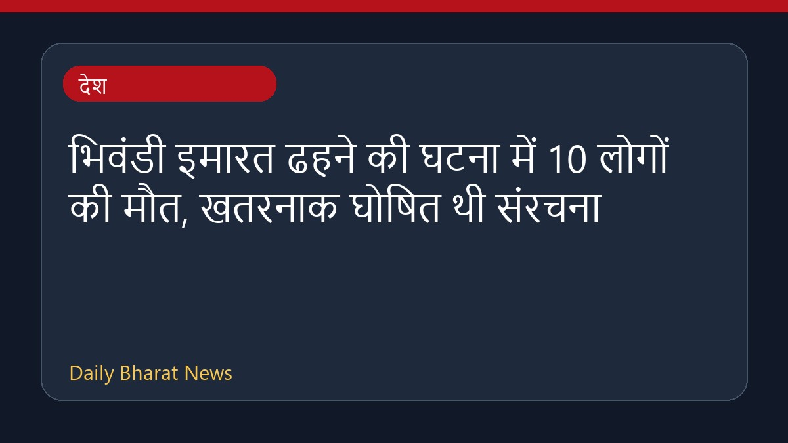

भिवंडी इमारत ढहने की घटना में 10 लोगों की मौत, खतरनाक घोषित थी संरचना

महाराष्ट्र के भिवंडी में एक इमारत के ढहने से 10 लोगों की मौत हो गई है। अधिकारियों के अनुसार, यह संरचना पहले ही खतरनाक घोषित की जा चुकी थी और इसे लेकर नोटिस भी जारी किए गए थे। नागरिक निकाय का दावा है कि पानी और बिजली का कनेक्शन काटने के बाद इमारत को खाली करा लिया गया था, हालांकि स्थानीय निवासियों ने इससे इनकार किया है। प्रधानमंत्री नरेंद्र मोदी ने इस दुर्घटना में जान गंवाने वालों के प्रति शोक व्यक्त किया है और मुआवजे की घोषणा की है। इस मामले में अवैध मरम्मत कार्यों की भी जांच की जा रही है।
मूल स्रोत: India News Sources
Bhiwandi building collapse: 10 dead; structure ‘was declared dangerous’ - The Indian Express ↗
Bhiwandi building collapse: 10 dead; structure ‘was declared dangerous’ - The Indian Express ↗